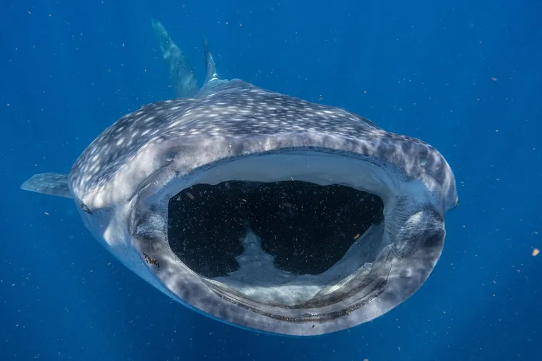
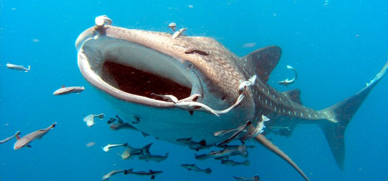

El tiburón ballena (Rhincodon typus) es una especie de elasmobranquio orectolobiforme, único miembro de la familia Rhincodontidae y del género Rhincodon; es el pez existente más grande del mundo, con aproximadamente 12 m de longitud. Presenta una alimentación por filtración. Habita en aguas cálidas tropicales y subtropicales. Se ha sugerido que habita en la Tierra desde hace 60 millones de años. En México se considera amenazado.El primer ejemplar identificado medía 4,6 metros de longitud y fue arponeado y capturado en las costas de Table Bay, Sudáfrica, en 1828. El espécimen fue vendido por 6 £, y su holotipo se muestra en el Museo de Historia Natural de París. La primera cita científica fue dada al año siguiente por Andrew Smith, un médico militar vinculado al ejército británico, que se encontraba estacionado en Ciudad del Cabo. En 1849 publicó una descripción más detallada de la especie. Se le asignó el nombre de "tiburón ballena" debido a la fisiología del pez, ya que se trata de un tiburón pero posee un tamaño comparable al de una ballena. En la religión vietnamita se le venera como a una deidad, y se le llama "Ca Ong", que significa literalmente "Señor Pez". También recibe el nombre de pez dominó, dámero, o pez dama, por el clásico juego de mesa.
El tiburón ballena posee una dieta omnívora que se compone principalmente de organismos del plancton, siendo oportunistas, alimentándose de florecimientos de zooplancton como copépodos, eufásidos, peces pequeños, huevos y larvas de peces, quetognatos, apendicularias, sergéstidos y hasta cefalópodos.
Habita en los océanos y mares cálidos, cerca de los trópicos, aunque algunos ejemplares han sido observados en aguas más frías, como las de la costa de Nueva York. Se cree que son peces pelágicos, pero en determinadas temporadas migran grandes distancias hacia zonas costeras, como Ningaloo Reef en Australia Occidental, Utila en Honduras, Donsol y Batangas en Filipinas, la isla de Holbox en el estado de Quintana Roo, las penínsulas de Yucatán y Baja California, México, costas del Pacífico colombiano en el Chocó (Bahía Solano y Nuquí), costas de Venezuela (ocumare de la Costa) las islas del archipiélago de Zanzíbar (Pemba y Unguja), en la costa de Tanzania, en Ceiba y en el archipiélago de las Perlas en Panamá. Y se le puede encontrar en la playa Los Cóbanos en el distrito de Acajutla, departamento de Sonsonate, El Salvador. Aunque es frecuente encontrarlo mar adentro, también es posible avistarlo cerca de la costa, entrando en lagunas o atolones de coral, y cerca de las desembocaduras de los ríos. Suele permanecer dentro de los ±31° de latitud, y a una profundidad de 700 metros. Suele actuar de forma solitaria, aunque de vez en cuando forman grupos para alimentarse en zonas con grandes concentraciones de comida. Los machos pueden encontrarse en lugares más dispares, mientras que las hembras prefieren permanecer en lugares más concretos.
Su vientre es totalmente blanco, mientras que su dorso es de un color grisáceo, más oscuro que la mayoría de los tiburones, con multitud de lunares y líneas horizontales y verticales de color blanco o amarillento, de tal forma que se asemeja a un tablero de ajedrez. Estas manchas representan un patrón único en cada espécimen, por lo que se utilizan para identificarlos y para censar su población. Su piel puede llegar a tener 10 centímetros de grosor. Su cuerpo es hidrodinámico, alargado y robusto, y presenta varios resaltes longitudinales en la cabeza y el dorso. Su cabeza es ancha y aplanada, y en sus laterales se sitúan dos pequeños ojos, detrás de los cuales están los espiráculos. Su enorme boca puede llegar a medir 1,5 metros de ancho, capacidad suficiente como para albergar a una foca nadando de costado, y en sus mandíbulas se halla una gran cantidad de filas de pequeños dientes. Tiene cinco grandes pares de branquias, cuyas hendiduras son enormes. Posee un par de aletas dorsales y aletas pectorales, siendo estas últimas muy poderosas. La cola de estos seres puede medir más de 2,5 metros de lado a lado. En los tiburones ballena jóvenes la aleta superior de la cola es más grande que la aleta inferior, en cambio la cola de un adulto tiene forma de media luna, y es la que les proporciona la propulsión. Sin embargo, el tiburón ballena no es un nadador eficiente, pues utiliza todo el cuerpo para nadar, lo cual no suele ser frecuente en los peces, y por ello se desplaza a una velocidad media de 5 km/h, una velocidad relativamente lenta para un pez de tan enorme tamaño.
El espécimen más grande del que se tiene registro fue capturado el 11 de noviembre de 1947, muy próximo a la isla de Baba, cerca de Karachi, Pakistán. Medía 12,65 metros de largo y pesaba más de 21,5 toneladas. Sin embargo, existen muchas historias de tiburones ballena más grandes, se mencionan longitudes de por encima de los 18 metros, que, por otra parte, no son nada extrañas en la literatura popular, pero no existen registros ni pruebas científicas que sustenten su existencia. En 1868, el botánico irlandés Edward Perceval Wright, mientras veraneaba en las islas Seychelles, observó algunos especímenes de tiburones ballena, y aseguró haber visto ejemplares de más de 15 metros de longitud, e incluso alguno que sobrepasaba los 21 metros.
En una publicación de 1925, Hugh McCormick Smith describe a un tiburón ballena de enorme tamaño atrapado en una trampa para peces de bambú de Tailandia en 1919. El tiburón era demasiado pesado como para desembarcarlo en tierra firme, pero Smith estimó que su longitud era de al menos 17 metros, y que su peso rondaba las 37 toneladas, aunque más tarde se exageraron estas cifras, llegándose a afirmar que medía 17,98 metros y que pesaba 43 toneladas. Incluso ha habido avisos de tiburones ballena de 23 metros. En 1934, el barco Maurguani se topó con un tiburón ballena mientras navegaba por el sur del océano Pacífico, y le golpeó, lo que hizo que quedara bloqueado en la proa del barco, se cuenta que medía 4,6 m por un lado del barco y 12,3 metros por el otro. De todos modos, no existe documentación fiable sobre ninguno de estos hechos, por lo que siguen siendo poco más que "leyendas marinas".
Es el objetivo de la pesca artesanal y de la industria pesquera en varias zonas costeras donde se deja ver ocasionalmente. La población de esta especie es desconocida, pero está considerada por la UICN como una especie en peligro. Será prohibida y penada toda pesca, venta, importación y exportación de tiburones ballena para propósitos comerciales. En Filipinas se aplica esta ley desde 1998, y en Taiwán desde mayo de 2007, país donde cada año se mataban aproximadamente 100 ejemplares. Recientes estudios han mostrado que el turismo puede estar cambiando algunos de los aspectos de la vida de este tipo de tiburones. En concreto, la perturbación de su hábitat está suponiendo que se vean desplazados, por lo que tienen un mayor gasto energético y ven reducida su velocidad. A la larga, esto supone un cambio en su ecosistema natural, por las muchas implicaciones que su desarrollo ordinario mantuvo respecto a otras especies.